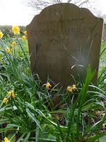

James’s mother, died in 2017 and from that time James and his father seemed to become objects of suspicion to Social Services. This culminated in James’s father being forced into a care home after he had been admitted to hospital with an attack of gastro-enteritis.
As I listened to this part of James’s story my heart sank – I have heard too many long sad tales from people who feel that their relatives have been stolen from them, refused a return home from hospital and forced into residential care when some small hiccup disturbs their private equilibrium. James’s visits to his father were restricted during this period, for no clear reason. Many people at this point find themselves involved in Safeguarding Enquiries, Best Interest Meetings (where the bewildered family member finds themselves surrounded by professionals often talking jargon) and Court of Protection proceedings where the family member may find themselves acting as their own lawyers, again ringed round by professionals and paying fees for no clear reason.
Somehow, James and his father (Jimmy) escaped and resumed their
life at home together – with a bill for £2000, which James 5 years later, is
still refusing to pay. There were other minor impositions – carers sent into
the home every evening to put Jimmy to bed at 6pm despite the fact that he
liked sit up with James until 10pm – and more bills to the family for these unrequired services.
But essentially the two of them managed to continue their quiet, affectionate existence until Jimmy died.
‘I cried and cried and cried’ says James. He still dreams of his father and wakes crying. He has both his parents’ urns in the house with him. He hugs them. James misses Jimmy and Margaret every day and has changed nothing in the house where they have lived together since 1978. James lives with Asperger’s Syndrome remember; he has to find his own, unique way to cope with daily life.
After Jimmy's death, James experienced deep
depression. Statistically he was probably at risk of suicide but instead he
went swimming. There was one particular day when he swam and swam and swam, length
after length of a local pool until somehow, he says, he swam his way out from his
depression. Now he has constructed a
daily routine for himself which includes swimming every day (in a lake, a
river, a marina as well as the indoor pool) and tea ‘with’ his Dad at their
regular time.
James has had many operations to improve his eyesight and
now, though still severely impaired, he is able to maintain his independence
and find his way around safely by using a Tom Tom. Imagine his delight when he
heard of a scheme whereby the
Tom Tom voice can be replaced with one personal to the user. People in danger
of losing their voices (though an illness such as MND or oral cancer) can ‘bank’ their voices
for the day when they need adaptive technology. James had saved MP3 recordings
of his parents so wrote at once to the charity running the scheme. He wanted
to know if his parents’ voices could be programmed into his Tom Tom so it would
be their beloved voices helping him find his way around. Yes, said the charity,
technically this could be done – but James would need to obtain his parents’
permission.
And the dead can’t give permission.
 |
| I visited my parents recently It was very comforting. |
{kind=link}
I have not changed the names in James's story as he told it to me as a true record of his experience. I really liked James and felt great respect for the quality of his love and sorrow. I also felt anger at the manifestation of bureaucracy that required this signed permission slip. I was also interested in the moments where I listened and wondered whether this was a 'normal' family. I realised then I was behaving exactly like the social service conformist police. If someone had told James that by caring devotedly for his parents during their lives - and being loved by them in return - he was laying up loneliness for himself in his older age, would he have chose to behave differently? I don't think so.
As this is a literary not a campaigning page I would like to share one of my absolute favourite childhood poems with you. It's by William Wordsworth and was published in the Lyrical Ballads in 1798. I read and reread this poem as a child and would like to dedicate it to James as he continues to have his tea with his dad every day.
{kind=link}
We Are Seven